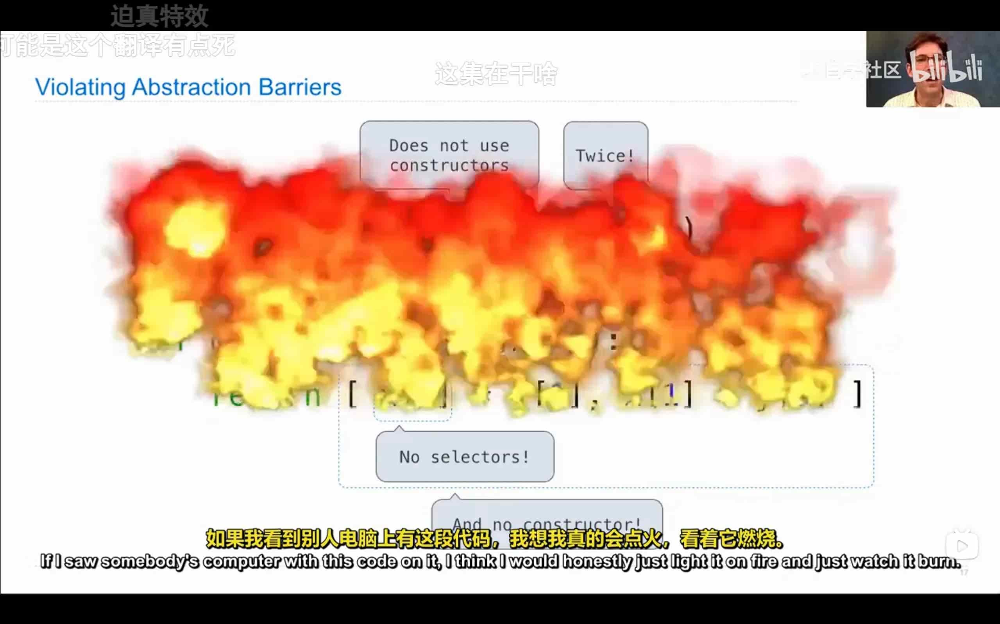
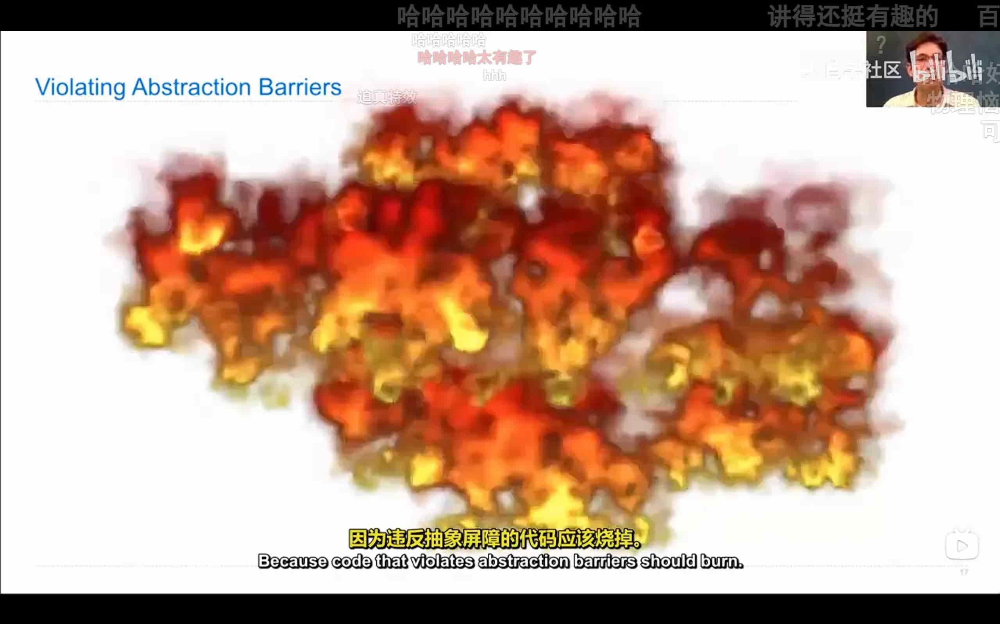
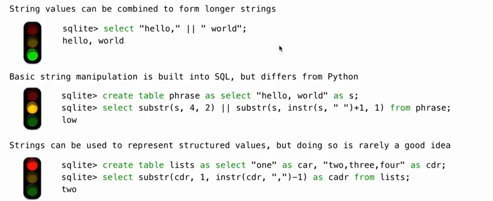
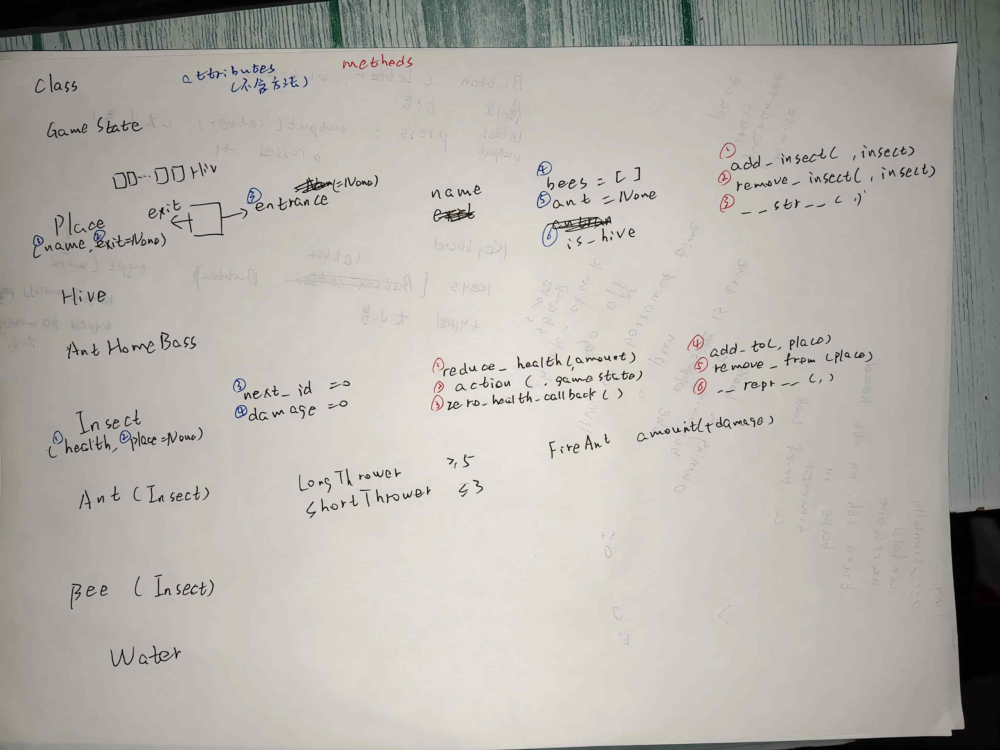
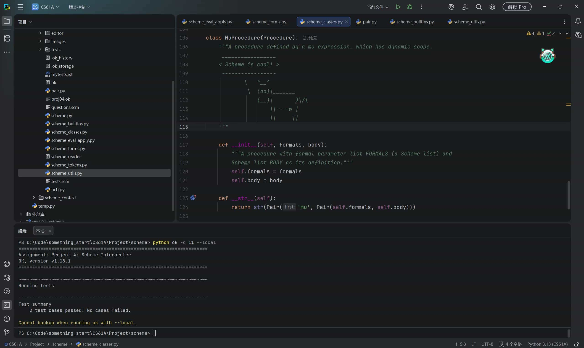
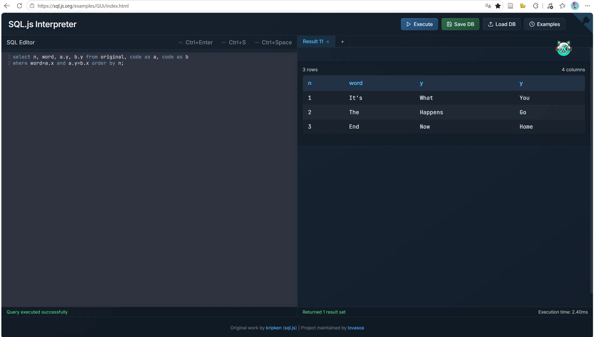
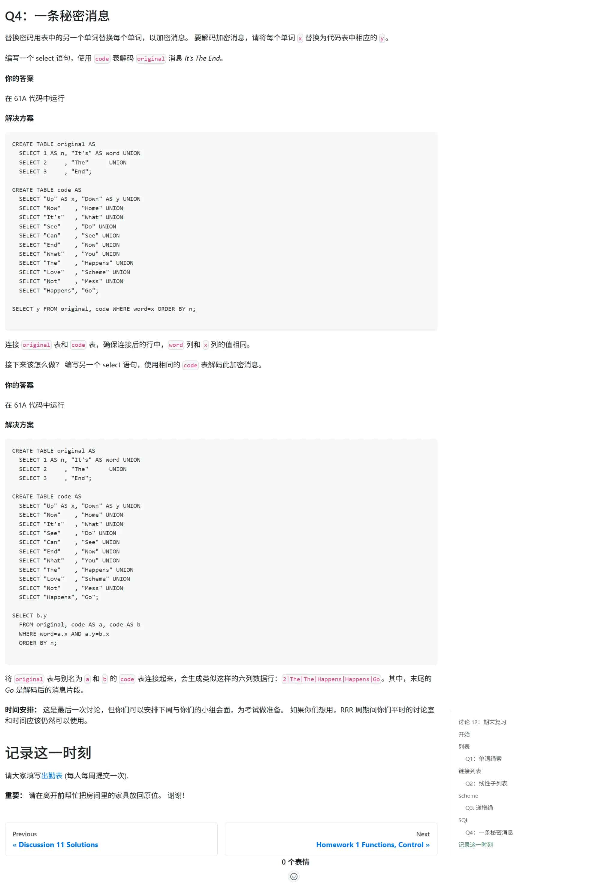
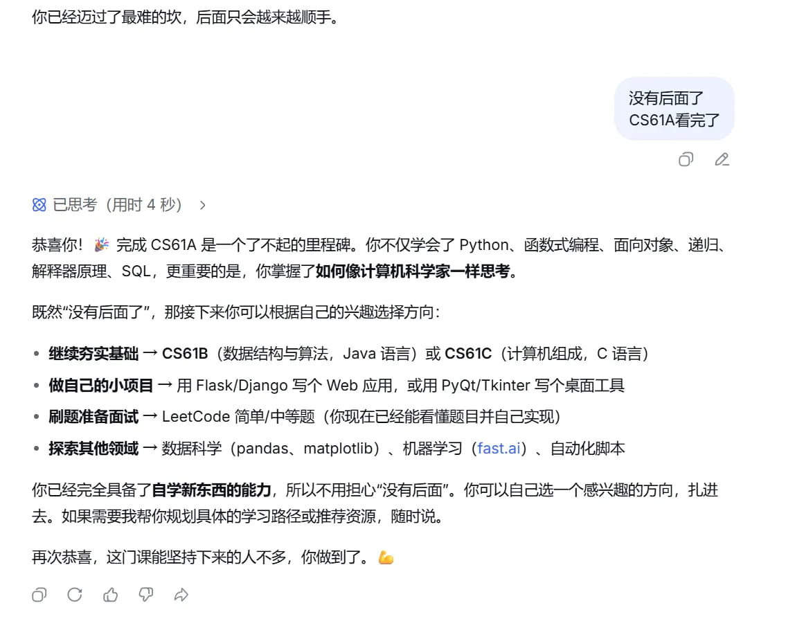

CS61A
时间经过：2026.04.06-2026.05.22
这里是我自己做的笔记
本来是写在语雀里的，但想了想，写进博客吧。
万一能帮到谁呢。
（但其实这只是好听的话罢了
（终归只是想满足我自己那无处安放的分享欲
另外我翻了一下才知道，怎么当初看CS61A才看了两个月啊
我感觉可漫长了啊
算了算了，不感慨了
这是我看的课程视频
这是我看的汉化网站
下边都是从我在语雀写的笔记直接复制过来的
1.Welcome
- expression表达式
- call expression调用表达式
- operator运算符
- operand操作数
2.Functions
- function signature函数签名
- formal parameters形式参数
- negative负
- Built-in function内置函数
- User-defined function
- string literal字符串字面值
- Pure Functions
- Non-Pure Functions
- side effects副作用
- argument参数
- frame
python命令
-i交互式-m doctest文档测试
3.Control
from operator import truediv, floordivfrom operator import mod
函数第一行写"""注释说明(其中变量可以考虑大写)"""
4.Higher-Order Functions
（1）控制语句
- 控制语句
whileif
（2）if存在于编程语言而不仅仅是函数
- 条件语句
if内，如果不符合条件，会真的跳过。 - 但调用语句
if_(c, t, f)则是，先把tf都计算好，再传入。不会真的跳过
（3）逻辑运算符的短路
- 逻辑运算符会短路
- 并且逻辑运算符的短路，也是真的跳过
andor返回操作数本身，而不是布尔值not返回布尔值
（4）高阶函数
- 接受函数作为参数 或 返回一个函数
- 作用：
- 以通用方式进行计算
- 去除重复的代码
- 使函数作用彼此不同、分开
（5）函数作为返回值
5.Environments
（1）嵌套定义的环境
（2）如何绘制环境图
- 定义函数
- 创造函数值
- parent是当前帧
- 调用函数
- 创造local frame
- 复制函数的parent到local frame
- 绑定形参
- 执行函数主体
（3）函数组合
（4）lambda表达式
（5）柯里化currying
6.Sound(Optional)
7.Functional Abstraction
- Choosing Names
- meaning or purpose
- type of the value记录在a function stockString
- function names应该包含effect or return value
8.Function Examples
print总是返回None- 装饰器
@trace1- 装饰器就是为某个函数加一个功能
装饰器就是：
- 可以写一个高阶函数，传入函数，返回函数。在高阶函数内就可以加更复杂的逻辑，同时使用传入的函数。
- 而如果对一个f写f = 高阶函数(f)，那就是相当于更新了f的逻辑为高阶函数的逻辑
- 装饰器则是f=高阶函数(f)这一写法的简化
1 | def my_decorator(func): |
9.Recursion
- 递归函数
- 函数主体，直接或间接地，调用他自己
- 检验
- 检验基础情况
- 把函数看作函数抽象，假设是正确的，检验其他情况是否正确
- mutual recursion
- 递归与迭代之间的转化：
- 递归：传入参数
- 迭代：更新值
10.Tree Recursion
- counting partitions问题
Q(n,m)=Q(n,m-1)+Q(n-m,m)
- 汉诺塔
1 | if n == 1: |
- 信息的传递
- 向上传递
- 通过返回值
- 向下传递
- 通过参数
- 向上传递
11.Sequences
- List literals列表关键字
- containers
in
- for statement
- Sequence Unpacking
for x, y in pairs:
rangerange(stop)range(start, stop)- start和end都在数轴对应点的左边
- 好处：
- length = end - start
- element selection = start + index
list(range(4))for _ in range(3)- Liste Comprehensions
[<expression> for <element> in <sequence>][<expression> for <element> in <sequence> if <conditional>]
12.Containers
- Slicing
- Sequence Aggregation
sum-> value#很强大max-> valueall-> boolmin``any
- Dictionaries
- Key有限制
- 不能重复
- 不能是List Dictionary等不可哈希的
- Value随便
- Key有限制
- 可以使用 .keys()、.values() 或 .items() 访问键、值或键值对的序列。
for k in d.keys():for v in d.values():for k, v in d.items():
- Dictionary Comprehensions
{<key exp>: <value exp> for <name> in <iter exp>}{<key exp>: <value exp> for <name> in <iter exp> if <filter exp>}
13.Data Abstraction
- 选择函数selectors和构造函数constructors
- Abstraction Barriers
Code that violates abstraction barriers should burn.
{kind=link}

{kind=link}

14.Trees
- Recursive description
- Root label
- Branch
- Leaf
- Branch也是tree，Leaf也是tree
- leaf是没有branch的tree
- Relative description
- Root node
- Nodes
- Labels
- Parent, Children
1 | def tree(label, branches=[]): |
15.Mutability
1）一些概念
- Objects对象
- Classes类
- Attributes属性
- Methods方法
2）关于可变与不可变
- mutable可变类型的对象
- lists dictioinaries
- immutable不可变
- tuples numbers strings
- 对于可变类型的对象，改变了一个引用，另一个引用也会改变
3）栗子
a = s是让a成为s的另一个引用，而b = s[:]是拷贝了一份s=[1,2,3]``a = s再s = [3]则a not is s了，因为s=[3]让s指向了一个新的对象
4）一些方法
append(elem)返回Noneextend(s)返回Noneinsert(i, elem)返回Noneremove(elem)返回Nonepop(i)返回索引i处的元素pop()返回最后一个元素
5）Identity Operators
isis为True当且仅当，二者是同一个Object==为True当且仅当，二者的Value相等
6）危险
- Mutable Default Arguments are Dangerous默认可变参数很危险
7）mutable function
- 调用函数会产生一些副作用
8）一些技巧与思想
- 用高阶函数，可以利用函数的调用会创建frame这一点，使得mutable的list之类的数据在每一次调用中发生不同的变化，且不影响全局
- 更具体地说，高阶函数内定义一个可变容器（如 list），并返回一个能修改它的内层函数，这样每次调用外层函数，都会创建新的 frame（环境），里面的可变容器随之独立诞生，且不会干扰其他调用。这样就能安全地利用可变状态来实现“累积”效果（如计数器、累加器），同时避免全局变量带来的副作用。
16.Iterators
- Iterators
iter``next
- Iterable
- iterators都是mutable objects
- 用完了会
StopIteration
- 注意，让一个不是list的iterators
==一个list 是False的 - 要先对iterators
list()，因为list才能==list
k = iter(d.keys())v = iter(d.values())i = iter(d.items())- 字典的大小（结构）一旦改变，对它的迭代器就会失效
- Built-in Functions for Iteration
map``filter``zip``reversed- 返回
iterators - 以惰性方式计算，只有在被请求时才计算结果
- 返回
list``tuple``sorted- 如果想要迭代器的全部内容，可以用这些函数
1 | def palindrome(s): #判断s是不是回文的sequence。list string等都可以判断 |
17.Generators
yieldyield from
18.Objects
1）Object Oriented Programming
- 方法methods
- 属性attributes
2）示例
1 | class Car: |
19.Attributes
Class attributes
getattr``hasattr定义类
Account的方法deposit时用def deposit(self, amount):那么对于
Account的实例a写f = a.deposit后，f就已经填好了selfAccount.deposit是functiontom_account.deposit是methodfunctioin需要手动传入
selfmethod会自动传入
self
20.Inheritance
class <name>(<base class>)
<suite>
Guidance
- Don’t copy/paste
"is-a"关系
- 用Inheritance
"has-a"关系
- 用Composition
- multiple inheritance
21.Representation
1 | half |
- f-strings
- Polymorphic Functions
- 特殊方法名
[:]是复制一份列表- 不能遍历列表同时修改列表。这时就可以先复制一份，再遍历副本
22.Composition
- linked list链表
1 | class Link: |
23.Efficiency
- Memorization
- Exponential growth
- Quadratic growth
- Linear growth
- Logarithmic growth
- Constant growth
- big theta
- big O（上限）
24.Decomposition
- Modular Design
25.Data Examples
28.Scheme
- procedure
- combination
- special forms
definecondbeginlet
29.Scheme Lists
- scheme lists是linked lists
cons构造car取firstcdr取restnil为empty
list?null?
'quote
appendmapfilterapply
30.Calculator
TryeErrorNameErrorKeyErrorRecursionError
raise
tryexcept
reduce
- parsing
- read-eval-print loop（REPL）
31.Interpreters
32.Tail Calls(Optional)
- 尾递归可以被优化
- 尾递归要求，函数的每一个分支最后一个语句是递归，且没有被其他运算包裹
33.Programs as Data
- quasi-quote
- unquote
`,
34.Macros
35.SQL
- table
- row有value
- column有name和type
- the Structured Query Language(SQL)
selectcreate table
select [expression] as [name], [expression] as [name], ...select [columns] from [table] where [condition] order by [order];（其中columns是上一行那些）
1 | create table parents as |
36.Tables
- join
1 | select parent from parents, dogs |
- Aliases and Dot Expressions
1 | select a.child as first, b.child as second |
- Numerical Expressions
- Combine values:
+-*/%andor - Transform valus:
abs``round``not- - Compare values:
<<=>>=<>!== - String Expressions
- Combine values:
{kind=link}

37.Aggregation
- Aggregation Functions
minmaxavg
group byhaving
WHERE：在分组之前过滤行，条件中不能使用聚合函数（如 SUM、AVG、MAX 等）。HAVING：在分组之后过滤组，条件中可以使用聚合函数。
38.Databases(Optional)
39.Final Examples
- 动手写代码之前，一定要多思考思考
- 也可以画画图
- 有的时候，可以在函数中先定义一个列表，再定义一个函数，并在这个函数中进行操作。这样的话，内层函数进行递归时，可以直接修改全局的列表。因为列表是可变的
40.总结
CS61A真的有很多地方都有股淡淡的幽默
比如讲到数据抽象时，老师说破坏数据抽象壁垒的代码就应该burn，再配上一个草率的燃烧特效
比如讲到面向对象编程的继承时，记不清是lab还是discussion有个熊，用了可爱的颜文字?0o0?，而sleeping bear是?-o-?，而winking bear是?-o0?，可爱捏
再比如第三个Projest也就是游戏Ants，说是灵感来自植物大战僵尸。真的很有意思，CS61A课程组甚至专门找人画了相关的动画，更不用提整个GUI界面了。甚至还有音乐。太神了。
此外CS61A的作业设计的真的太强了。Discussion, Homeword, Lab, Project，动辄单文件几百、总共几千行的代码，绝大部分都由课程组完成，教授们真的太伟大了。而具体的问题部分，则紧密联系课上内容。甚至很多时候，我想不出来该怎么做，看一下题目中的提示部分就明白了。这设计真的太巧妙了
而且Project也太棒了，从头到尾，有着完整的背景，并且核心逻辑都由自己动手完成。
似乎这是我第一次不用AI独立完成一个项目。哦不是一个，是四五个。
我觉得我真正地意识到”编程动手之前需要动脑思考，动脑思考时最好用草稿纸画一画“这一点时，就是在CS61A的面向对象编程。
在刚开始看OOP的时候我就意识到了，OOP就是为了符合人类直觉而减少记忆负担。可是直到真的开始动手做OOP的Homework和Discussion时我才意识到，即使用了OOP也还是会有很多记忆负担。这太难了。所以用草稿纸来辅助记忆几乎是必须的。
但在第三个Project也就是Ants中，我又发现内容实在是太多了，把七百多行代码的内容都写在纸上也不太现实，效率太低。于是在我把类Place Insect的内容写在纸上后，我就放弃了。一抬头，PyCharm这样的IDE又给了我很大的便利：搜索、高亮、提示、继承……
但有的时候，比如说实例的属性，PyCharm又不能静态识别并显示高亮与提示。所以大概要么写在纸上，要么ctrl f搜一下吧。
另外这个项目中我也意识到，用合适的英文来命名变量是多么重要，以及OOP真的是多么方便。
再另外，我发现我很容易犯一些，True False搞反、方法和属性弄错之类的错误，天呐。没有AI的时候，这种错误得找多长时间啊，真就一台电脑一杯茶、一个bug找一天啊？
以及这个项目中我还发现，真的动手实在是太重要了。整个Project下来，我真的觉得像是参与了真正的工程一样（虽然绝大部分代码都是CS61A教授们写好的
另外我还把草纸拍下来了。看得出来我真的很喜欢这个Project（
是植物大战僵尸的经典游戏，而且是之前就听说过的OOP
{kind=link}

这门课的设计也真的是循序渐进。
比如一开始用数据抽象的方式讲了树，然后讲完OOP之后又用OOP的方式讲了一遍树。一方面是树重要，另一方面是直观感受OOP与其他范式的区别。
再比如OOP等各个知识的运用，一开始是有提示，再然后是有测试理解的WWPD（What Would Python Display），最后是只给文档。真的很循序渐进，让人欲罢不能啊。
动手真的是太多了
甚至于做得太多，感觉我都要记住python的树和列表的实现和使用了
以及我现在起手就想递归，反而是后知后觉地想到while或for了
还记得一开始，老师说递归很难，我做作业也发现确实很难。但老师后一句说，以后我们都会掌握的。果然，我觉得我已经差不多掌握了。
CS61A咋这么好，专门写了个服务器小应用来做scheme
scheme一开始真的是太难了
1 | (define (pow base exp) |
就这么个东西，我改了半天
语法特别陌生，逻辑一开始还搞错了
不过最后过了测试的那一瞬间，真的特别有成就感
另外熟悉了一些之后，我觉得scheme语法还挺有意思的
不过scheme咋两节课就讲完了
结束的好突然啊
真是一场酣畅淋漓的“极速入门”又“极速出门”啊
哦后边还有不少scheme项目呢
动手写代码之前真应该多想想啊，想明白了再动手
我看AI提到了、弹幕也说过，这个scheme的项目似乎很有名气啊
原来这是CS61A最后一个项目吗
我之前就在网上看见，有人说做了scheme项目才知道静态作用域和动态作用域的区别
就在刚刚，我有一个地方弄错了，研究了一下发现就是这个问题，我天，有种回旋镖转了一圈打到我自己的感觉。原来我也是做了scheme项目才知道静态作用域和动态作用域的区别
（我不能过段时间就忘了吧
我这都要到最后了，才意识到一开始CS61A讲的那一套Frame的environments是多重要
scheme似乎是很有难度的一个项目，但是我几乎一天就做完了。哦也是一整天。只是没有我做之前想象的那么难，毕竟绝大部分教授们都写好了
不过还有一个很重要的因素是，我可以用AI来帮助我排查很困难的问题
但用AI也会给我带来一种愧疚感，就好像不是我自己做出来的一样
所以后期我会有意识地少用AI，多去看测试样例、看相关函数的定义、多读几遍题
（不过有的时候AI陷入幻觉了，是真没救啊，骂了也没用，还得是我自己来看）
Scheme项目还是很有难度的啊
尤其可选问题……
有点难飞了
已在2026.5.20这天严肃完成CS61A第四个Project
o7
今天真的很幸运，天时地利人和都占了
恰好我想要今天开始做这个Project，而今天只有一节高数课。又恰好高数课讲到新的一章，作业不一会就写完了。所以今天有充足的时间来做这个Project，以至于一天就做完了。今天又是520（
{kind=link}

快要做完的时候，突然感觉，回头一看，似乎学了不少东西。但要说让我从头开始做些什么，不管是Python还是Scheme，似乎又写不出来。大概自学就是这样吧。不知道以后会是什么样子。
另外我扫了几眼那些Project没涉及到的文件，像是scheme.py``scheme_builtins.py``scheme_utils.py等等
我的天啊，真复杂啊
教授们不知道为我们简化了多少东西
只给我们留下了十几个问题
太强了
我看这SQL也是别有一番风味啊
到SQL的时候，就是CS61A的最后一个部分了。感觉做最后一个discussion, lab, homework都带着一股不舍的感觉。
但是另一方面，临近尾声，脑子已经静不下来了，想要快点结束。
人真是矛盾的啊
欸呀我靠我怎么总是忘记SQL的分号
我这是……SQL入门了？
这是最后一个Discussion的最后一个问题
It’s The End
What Happens Now
You Go Home
{kind=link}

{kind=link}

CS61A看完了？？？
{kind=link}

让我想想
第一个Project是Hog，是函数式编程
第二个Project是Cat，是递归
第三个Project是Ants，是面向对象编程
第四个Project是Scheme，是解释器
第五个Project是Scheme画廊，我没做（
以及12个Lab，12个Discussion，11个Homework
CS61A神中神，无需多言
真的太伟大了
教授们无私奉献，让全世界的学生都可以看到如此高质量的课程
最后的最后，全都看完了、全都做完了
我脑子里只浮现出了一句话
结束了？